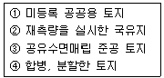

지적기능사 (2006-10-01 기출문제)
1과목: 지적일반(임의구분)
1. 우리나라 지적의 3대 이념(원칙)이 아닌 것은?
- 지적 공개주의
- 지적 형식주의
- 지적 국정주의
- 지적 경계주의
(정답률: 88%)

2. 지적공부정리 등을 전산정보처리조직에 의하여 처리하는 지적전산정보처리 담당자를 등록하여 관리하는 것은?
- 전산관리부
- 사용자권한등록화일
- 정보처리관리부
- 승인등록화일
(정답률: 28%)
3. 지적 공부에 등록된 사항을 토지 소유자나 이해관계인등 일반 국민에게 신속, 정확하게 공개하여 저당하게 이용할 수 있도록 해야 한다는 지적법의 기본 이념은?
- 국정주의
- 형식주의
- 공개주의
- 실질적 심사주의
(정답률: 92%)
4. 다음 중 경계점좌표등록부에만 등록 하는 사항은?
- 토지의 소재
- 지번
- 면적
- 좌표
(정답률: 79%)
5. 우리나라 토지조사사업의 실시 연대로 옳은 것은?
- 1890년대
- 1900년대
- 1910년대
- 1920년대
(정답률: 72%)
6. 지적공부에 등록된 1필지를 2필지 이상으로 나누어 등록하는 것을 무엇이라 하는가?
- 분할
- 등록전환
- 합병
- 신규등록
(정답률: 97%)
7. 다음 중 토지대장 및 임야대장에 등록해야 할 사항이 아닌 것은?
- 토지의 소재
- 지번
- 경계
- 지목
(정답률: 64%)
8. 일반적인 경계구분에 대한 설명 중 측량사에 의하여 측량이 행해지고 지적 관리청의 사정에 의하여 확정된 토지 경계를 무엇이라 하는가?
- 도상 경계
- 법률적 경계
- 보증 경계
- 인공적 경계
(정답률: 75%)
9. 다음 중 도면에 표시하는 지목 표기의 부호로 옳은 것은?
- 목장용지-장
- 양어장-양
- 주차장-주
- 체육용지-육
(정답률: 56%)
10. 일필지의 소유자가 몇 명 이상일 경우 공유지연명부를 작성하는가?
- 2인
- 3인
- 5인
- 10인
(정답률: 87%)
11. 합병된 토지의 지번 설정방법으로 가장 올바른 것은?
- 임의대로 지번설정을 한다.
- 합병된 관계로 지번을 새로이 정하여 사용한다.
- 합병 전의 지번 중 선순위의 것을 그 지번으로 사용한다.
- 합병하여도 그 지번 2개를 이어 사용한다.
(정답률: 82%)
12. 지적공부의 열람 또는 등본교부의 신청을 하는 겨우 수수료의 납부 방법은?
- 수입인지로 소관청에 납부한다.
- 수입증지로 소관청에 납부한다.
- 현금으로 소관청에 납부한다.
- 현금이나 수입인지로 소관청에 납부한다.
(정답률: 41%)
13. 토지이동정리 중 등록전환이란?
- 임야대장 및 임야도에 등록된 토지를 토지대장 및 지적도에 옮겨 등록하는 것
- 지적도에 등록된 토지를 임야도에 옮겨 등록하는 것
- 토지대장에 등록된 토지를 임야대장에 옮겨 등록하는 것
- 경계점좌표등록부에 등록된 사항을 임야대장에 옮겨 등록하는 것
(정답률: 83%)
14. 다음 중 지적도면 작성시에 사용할 수 있는 방업으로 틀린 것은?
- 간접자사법
- 간접복사법
- 직접자사법
- 전자자동제도법
(정답률: 62%)
15. 일반적으로 축척 1/600 지적도 시행지역에 대한 일람도의 축척은?
- 1/1200
- 1/3000
- 1/6000
- 1/12000
(정답률: 56%)
16. 1필지의 면적이 1m2 미만인 농촌산간지역의 토지를 토지대장 또는 임야대장에 등록하는 방법으로 옳은 것은?
- 0.5m2 미만이면 등록하지 않는다.
- 0.5m2 이상이면 0.5m2 로 등록한다.
- 1m2 로 등록한다.
- 0m2 로 등록한다.
(정답률: 80%)
17. 일람도에 등재하여야 할 사항이 아닌 것은?
- 지번
- 지번설정지역의 경계 및 명칭
- 도면의 제명 및 축척
- 주요 지형 지물의 표시
(정답률: 43%)
18. 조선시대의 양안(量案)의 의미는 다음 중 어느 것과 가장 관계가 있는가?
- 토지대장
- 매매증서
- 건축물 등록증
- 개인 신상 확인
(정답률: 82%)
19. 지적측량의 보조 또는 도면의 정리와 등사, 면적 측정 및 도면작성으로 직무 범위가 규정되어 있는 지적기술자는?
- 지적기술사
- 지적기사
- 지적산업기사
- 지적기능사
(정답률: 85%)
20. 지적공부에 등록하는 면적은?
- 지구 구면상의 면적
- 입체적 지표상의 넓이
- 수평면 상의 넓이
- 경사면 상의 넓이
(정답률: 88%)
2과목: 지적측량(임의구분)
21. 소관청은 축척변경의 시행에 관하여 시∙도지사의 승인을 얻은 때에는 최소 몇 일간 공고 하여야 하는가?
- 10일 이상
- 20일 이상
- 30일 이상
- 40일 이상
(정답률: 68%)
22. 토지대장의 일반적인 유형이 아닌 것은?
- 장부식 대장
- 편철식 대장
- 카드식 대장
- 기고식 대장
(정답률: 76%)
23. 하나의 지번에 붙는 토지의 등록단위를 무엇이라 하는가?
- 번지
- 필지
- 단지
- 대지
(정답률: 84%)
24. 토지 또는 건축물의 용도가 변경된 경우 토지이동정리는?
- 합병
- 분할
- 지목변경
- 등록전환
(정답률: 73%)
25. 과수원을 매수하여 소유권 이전 등기를 완료 하였으나 토지대장에는 이전 정리되어 있지 않다. 다음 서류 중 토지 대장상 소유권 이전 권리의 근거가 될 수 있는 것은?
- 매매 계약서
- 환지 등기 촉탁서
- 소유권에 관한 소관청 조사서
- 등기필증
(정답률: 42%)
26. 신규 등록할 토지가 있는 경우 그날로부터 최대 몇 일 이내에 소관청에 신청해야 하는가?
- 10일
- 20일
- 30일
- 60일
(정답률: 72%)
27. 지번의 설정방법으로 옳은 것은?
- 지번은 북서에서 남동으로 순차적으로 설정한다.
- 지번은 남동에서 북서로 순차적으로 설정한다.
- 지번은 남북에서 동서로 순차적으로 설정한다.
- 지번은 북동에서 남서로 순차적으로 설정한다.
(정답률: 89%)
28. 지적공부의 보존 연한은?
- 100년 보존
- 10년 보존
- 50년 보존
- 영구 보존
(정답률: 78%)
29. 지적제도를 법지적, 세지적 등으로 분류하는 기준으로 옳은 것은?
- 등록사항의 차원에 의한 분류
- 설치 목적에 의한 분류
- 등록의무의 강약에 의한 분류
- 경계 표시방법에 의한 분류
(정답률: 49%)
30. 현행 지적법상 무자격자의 지적 측량 행위에 대한 벌칙 규정은?
- 1년 이하의 징역 또는 500만원 이하의 벌금
- 1년 이하의 징역 또는 1000만원 이하의 벌금
- 2년 이하의 징역 또는 500만원 이하의 벌금
- 2년 이하의 징역 또는 1000만원 이하의 벌금
(정답률: 33%)
31. 지적공부에 토지를 등록하는 경우 등록 주체는?
- 토지소유자
- 소관청
- 행정자치부장관
- 읍∙면장
(정답률: 78%)
32. 지번을 사람에게 비유하면 다음 어느 것에 해당하는가?
- 성명
- 생년월일
- 사회적 지위
- 정신상태
(정답률: 87%)
33. 소관청이 관련규정에 의하여 신규등록, 등록전환, 분할 등의 토지 이동이 있는 경우 작성하여야 하는 것은?
- 토지이동정리결의서
- 공유지연명부
- 경계점좌표등록부
- 소유자정리결의서
(정답률: 76%)
34. 다음<보기>중 신규등록의 대상 토지로 바르게 짝지어진 것은?

- ①, ②
- ②, ④
- ①, ③
- ③, ④
(정답률: 72%)
35. 지적의 발생설과 거리가 먼 것은?
- 과세설
- 치수설
- 지배설
- 권리설
(정답률: 80%)
36. 지적측량의 기초측량에 사용되는 방법이 아닌 것은?
- 경위의 측량방법
- 광파기 측량방법
- 측판 측량방법
- 위성 측량방법
(정답률: 55%)
37. 축척 1/1000 도면에서 도관선의 신축량이 가로, 세로 각각 +2.0mm일 때 면적보정계수는?
- 1.0117
- 0.9884
- 1.1035
- 0.9965
(정답률: 62%)
38. 축척 1/600 도면상의 한 변의 길이가 10cm인 정사각형의 지상면적은?
- 5000m2
- 3600m2
- 2400m2
- 1200m2
(정답률: 65%)
39. 다음 중 행정구역 경계의 동,리계에 대한 제도방법으로 옳은 것은?
- 실선 3mm와 허선 2mm로 연결하고 허선에 0.3mm의 점 1개를 그린다.
- 실선 3mm와 허선 1mm로 연결하여 그린다.
- 실선과 허선을 각각 3mm로 연결하고 허선에 0.3mm의 점 1개를 그린다.
- 실선 3mm와 허선 2mm로 연결하여 그린다.
(정답률: 45%)
40. A, B 두 점간의 거리를 두 번 측정하여 각각 10.5m, 10.6m 의 측정치를 얻었을 때 정밀도는?
- 1 / 10.55
- 1 / 1⑤.5
- 1 / 1⑤5
- 1 / 1⑤50
(정답률: 51%)
3과목: 지적공부정리(임의구분)
41. 지적삼각측량은 측량법에 의해 설치한 삼각점과 무엇을 기초로 하여 시행하는가?
- 도근점
- 지적삼각보조점
- 수준점
- 지적삼각점
(정답률: 52%)
42. 지적측량의 대상이 아닌 것은?
- 토지를 신규 등록 할 경우
- 지적공부를 복구 할 경우
- 지목을 변경 할 경우
- 토지를 등록 전환 할 경우
(정답률: 71%)
43. 측판측량에 의한 세부측량시 경계위치는 기지점을 기준으로 하여 지상경계와 도상경계선의 부합여부를 확인하여 정한다. 그 확인방법으로 타당하지 않은 것은?
- 현형법
- 지상원호교회법
- 거리비교 확인법
- 도곽 확인법
(정답률: 37%)
44. 축척 1/1000 인 지적도 1 도곽의 실제 포용면적은?
- 30000m2
- 60000m2
- 90000m2
- 120000m2
(정답률: 72%)
45. 다음 중 경위의측량지역의 측량준비도 작성시 기재하여야 할 사항이 아닌 것은?
- 경계점간 계산거리
- 도관선과 도곽선수치
- 행정구역선과 명칭
- 신축량 및 보정계수
(정답률: 53%)
46. 지적(임야)도에 행정구역 경계가 2종 이상 겹칠 때에는 어떻게 정리 하는가?
- 2종 중 임의의 한 종류만 그리면 된다.
- 최상급 경계만 그린다.
- 최하급 경계만 그린다.
- 일정 간격을 두고 2종 모두 그려야 한다.
(정답률: 87%)
47. 지적도근측량에서 점간거리의 측정은 몇 회 측정을 원칙으로 하는가?
- 2회 측정한다.
- 3회 측정한다.
- 4회 측정한다.
- 5회 측정한다.
(정답률: 83%)
48. 지적삼각측량에서 방향관측법에 의한 수평각 관측시 윤곽도로 적합한 것은?
- 0゜, 30゜, 60゜
- 0゜, 60゜, 90゜
- 0゜, 45゜, 90゜
- 0゜, 60゜, 120゜
(정답률: 53%)
49. 수평, 수직의 눈금자를 제도판의 임의 위치로 정확하게 이동할 수 있고, 분도판의 눈금자가 필요한 각도에 고정시킬 수 있도록 만들어져 사용하기에 편리한 제도용구는?
- T자
- 각도기
- 만능제도기
- 플로터
(정답률: 47%)
50. 축척 1/600 지역에서 1필지 면적을 좌표면적계산법으로 계산하여 245.450m2를 산출하였다. 이 필지의 결정면적은?
- 245.45m2
- 245.4m2
- 245.5m2
- 246m2
(정답률: 58%)
51. 경위의측량방법에 의한 세부측량의 기준으로 옳지 않은 것은?
- 거리 측정 단위는 1cm로 한다.
- 측량결과도의 축척은 지적도 축척의 1/10로 작성한다.
- 도선법 또는 방사법에 의한다.
- 토지의 경계가 곡선을 이룰 때에는 가급적 현재 상태와 다르지 아니하도록 경계점을 측정하여 직선으로 연결한다.
(정답률: 31%)
52. 임야도상에서 합병되는 토지의 경계선 정리 방법은?
- 2선의 붉은색 짧은 교차선으로 말소
- 검은색 짧은 교차선으로 말소
- 연필로 말소 표시
- 칼로 선을 긁어 말소
(정답률: 72%)
53. 축척 1/1200 지적도 1 필지를 분할할 경우 원면적 3000m2에 대한 신구면적 오차의 최대 허용범위는?
- 30m2
- 38m2
- 44m2
- 54m2
(정답률: 61%)
54. 지적측량 기준점으로 볼 수 없는 것은?
- 수준원점
- 지적삼각점
- 지적삼각보조점
- 지적도근점
(정답률: 85%)
55. 지적제도에서 경계를 그릴 때 사용하는 선의 폭은?
- 0.1mm
- 0.2mm
- 0.4mm
- 0.5mm
(정답률: 68%)
56. 다음 중 각 측정에 이용될 수 없는 측정기계는?
- 트랜싯
- 레벨
- 토탈스테이션
- 데오드라이트
(정답률: 80%)
57. 지적측량에서 사용하고 있는 3대 원점에 해당하지 않는 것은?
- 동부원점
- 중부원점
- 서부원점
- 남부원점
(정답률: 67%)
58. 전자면적측정기로 면적을 측정할 때 몇 회 측정을 기준으로 하는가?
- 1회
- 2회
- 3회
- 4회
(정답률: 89%)
59. 임야도 축척의 종류는 몇 종류 인가?
- 1종류
- 2종류
- 3종류
- 4종류
(정답률: 90%)
60. 지적도의 도곽선의 역할 중 틀린 것은?
- 도북표시의 기준이 된다.
- 기준점 전개의 기준이 된다.
- 인접 도면의 접합 기준이 된다.
- 토지경계선 측정의 기준이 된다.
(정답률: 50%)